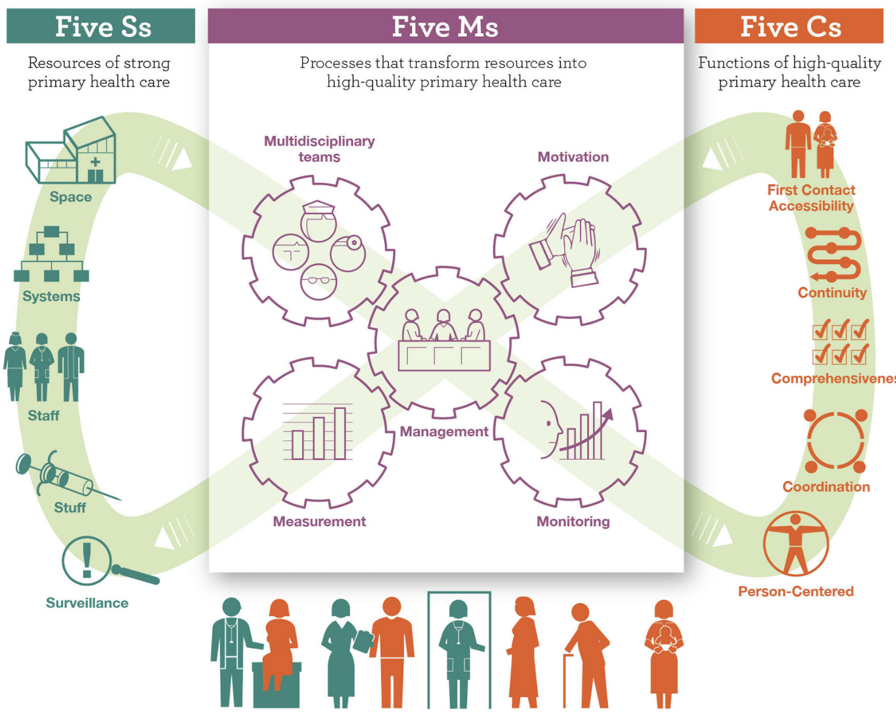

Models of Care
Concept and Framework
“Model of care” refers to the conceptualization and operationalization of how services are delivered: clinical processes, provider organization, service management, and population management, with clearly defined roles and responsibilities along care pathways. This definition is adopted by WHO/EMRO and is consistent with your initial synthesis distinguishing service selection/organization, delivery platforms, service management, and population management. PHC-oriented models of care
PHC-Oriented Models of Care
For PHC-oriented systems, the model is anchored in the Integrated People-Centred Health Services agenda and the PHC Operational Framework (WHO/UNICEF), which detail functions, levers, and measurement for translating vision into operation. Take home messages from the implementation of the primary health care measurement and improvement (PHCMI) initiative in the WHO Eastern Mediterranean Region (EMR)
Organization and Types of Models of Care
Although the components of a MoC may vary, they generally encompass: the selection and organization of services (including the essential service package); the definition of roles and functions of service delivery platforms; service management (including supportive supervision and multidisciplinary teams); and population health management (including the empanelment system — also called alistamento or carterização in Brazilian Portuguese — and community engagement).
Integration with the 5S-5M-5C Framework
The 5S-5M-5C, proposed by Bitton et al. based on the PHCPI framework, is an operational shortcut: 5 inputs (Systems, Space, Staff, Stuff, Surveillance) activated by 5 mechanisms ( Multidisciplinary teams, Motivation, Measurement, Monitoring, Management) to produce 5 quality functions (First Contact, Continuity, Comprehensiveness, Coordination, Person-Centred Care). The framework helps move beyond investing solely in inputs and toward prioritizing delivery mechanisms—exactly the emphasis of your text. The 5S-5M-5C schematic: transforming primary care inputs to outcomes in low-income and middle-income countries
How to use in practice: when redesigning a MoC, derive a “blueprint” where each proposed intervention makes explicit which M among the 5M activates which C among the 5C and which S need to be in place (e.g., multidisciplinary team + supportive supervision → coordination and continuity; requires a unified health record and integrated scheduling).
Why “How” We Organize Care Changes Outcomes
- Brazil (national longitudinal analysis): municipalities with higher-quality PHC — more qualified professionals and CHWs integrated into teams — achieved additional reductions in hospitalizations and mortality (diabetes, CVD, leprosy), beyond the effect of expanding access. In other words, the model design matters, not just coverage. The quality of alternative models of primary health care and morbidity and mortality in Brazil: a national longitudinal analysis
- PHC–mental health/behavioral conditions integration: collaborative team models (family physician + case manager + specialist) improve clinical outcomes and reduce emergency/hospital utilization; in children/adolescents, meta-analyses show an advantage of collaborative care over usual care. Implementing High-Quality Primary Care: Rebuilding the Foundation of Health Care - Integrated Primary Care Delivery
- Nurse-led models and work organization: reviews report reduced medication errors and improved pain outcomes in “team nursing,” with mixed effects on other outcomes—reinforcing the importance of implementation fidelity and context. Models of care in nursing: a systematic review
- Equity and persons with disabilities in Brazil: a multicenter study (REDECIN-BRASIL) shows that the FHS model is associated with a higher frequency of practices targeting persons with disabilities compared to the traditional PHC model. Primary health organization models and care practices for people with disabilities in Brazil
Types/Architectures That Recurrently Appear
- Community-anchored PHC (FHS, FPA/EMRO), with empanelment, home visits, coordination with specialized care and social services. PHC-oriented models of care
- Hub-and-spoke in primary care networks (e.g., experiences documented by R4D and partners), to consolidate clinical and logistical capacity in “hubs” with matrix support to the “spokes.” 5 principles for building an innovative primary health care model
- Horizontal/vertical integration (e.g., rare condition care coordination; child-to-adult transitions), with explicit roles for navigation, case management, and referral/counter-referral agreements. Development of models of care coordination for rare conditions: a qualitative study
- Post-2030 hybrid models (home-centered, low-friction digital, multidisciplinary teams with community outreach), identified as a strategic direction for multimorbidity. Models of global primary care post-2030 - PMC
Design and Evaluation Tools
- Circle of Care Modeling structures stakeholder discussions starting from the patient, useful for avoiding preconceived supply-side solutions. Circle of care modelling: an approach to assist in reasoning about healthcare change using a patient-centric system
- MoC Evaluation Tool (MCET) offers a 5-component checklist for comparing/adapting models under adoption. Evaluating models of healthcare delivery using the Model of Care Evaluation Tool (MCET)
- Care process frameworks (rapid task analysis) support the design of “real work” in clinics and territories. A novel and practical care process framework to inform model of care development
- WHO/EMRO standards and implementation materials (regional initiative) provide steps, deliverables, and examples for PHC-oriented models of care. Designing and implementing primary health care-oriented models of care in the Eastern Mediterranean Region: Regional initiative for transforming vision into action
Applied Examples by Care Pathway (What Changes on the Ground)
- Chronic conditions/multimorbidity: integrated models with panel management, extended consultations, intensification of protocols, clinical pharmacists, and telemonitoring show gains in process/utilization and, in mature settings, in outcomes. Systematic review of integrated models of health care delivered at the primary-secondary interface: how effective is it and what determines effectiveness?
- Oncology and survivorship: survivorship care programs (SCPs) and structured navigation are feasible but require time and resources; when well implemented, they improve coordination and patient experience. Models of Care in Providing Comprehensive Healthcare on Cancer Survivors: A Scoping Review with a TIDieR Checklist Analysis
- Elderly and home-based care: reviews of home/community-based arrangements (case management, integrated care, consumer-directed) describe effects on service utilization and autonomy, depending on local arrangements and social integration. A systematic review of different models of home and community care services for older persons
Practical Roadmap (in 6 Steps) for (Re)designing a PHC-Oriented MoC
- Define population, scope, and goals (Triple/Quadruple Aim + equity). List tracer conditions and pathway indicators (time to diagnosis, loss to follow-up, readmissions). Build on the WHO/EMRO definition to avoid confusing “programs” with “models.” PHC-oriented models of care
- Map the journey and backstage (journey + service blueprint), making roles, ICT, regulation rules, and hand-offs explicit. Mark where each 5M will be activated. Circle of care modelling: an approach to assist in reasoning about healthcare change using a patient-centric system
- Design the team and clinical governance (multidisciplinary teams, expanded nursing scope, clinical pharmacy, mental health), with supportive supervision and protocols. Models of care in nursing: a systematic review
- Population management and empanelment, with active case-finding, risk stratification, navigation, and integration with social services; ensure measurement and monitoring that are useful for decision-making (the two central “Ms” of the 5M). The 5S-5M-5C schematic: transforming primary care inputs to outcomes in low-income and middle-income countries
- Implement in short cycles (PDSA) and evaluate with standardized tools (MCET; WHO/UNICEF indicators for PHC). Evaluating models of healthcare delivery using the Model of Care Evaluation Tool (MCET)
- Plan for scale and adaptation using MoC design principles (fit with the existing system; network collaboration; focus on clear needs; continuous learning; investment in people). 5 principles for building an innovative primary health care model
Common Risks and How to Mitigate Them
- Subjective construction and “paper model” → use data and validation with users/teams; connect each intervention to an M and a C from the 5S-5M-5C; track with pathway and experience indicators. The 5S-5M-5C schematic: transforming primary care inputs to outcomes in low-income and middle-income countries
- Low attention to equity/PROGRESS-Plus → incorporate determinants (residence, race/ethnicity, occupation, gender, education, income, social capital, disability) into panel design and care flows. Take home messages from the implementation of the primary health care measurement and improvement (PHCMI) initiative in the WHO Eastern Mediterranean Region (EMR)
- Implementation fidelity → invest in supervision, clinical IT, and clear roles; the evidence of positive effects depends on “how” the model is operated. Models of care in nursing: a systematic review
Examples and Organizational Approaches:
- Family Practice Approach (FPA): This approach is being implemented in several countries of the Eastern Mediterranean Region (EMR). It transforms the service delivery approach from individual to family-based and integrated. The FPA seeks to strengthen the link between community health and facility-based services.
- Hub-and-Spoke Model (Ghana): In Ghana, the Preferred Primary Provider (PPP) Networks initiative uses the Hub-and-Spoke model. In this model, four to five smaller zones (Spokes) connect to a larger and better-equipped Health Center or CHPS (Community Health Planning and Services) facility (Hub), forming a group practice to provide comprehensive care to a defined population. This model emphasizes collaboration among providers rather than competition.
- PHC Organizational Models in Brazil: A study compared the Traditional PHC Model with the Family Health Strategy (FHS) model. The FHS model showed a positive and statistically significant association with a higher frequency of practices targeting Persons with Disabilities (PwD), such as prenatal follow-up, home-based care, and health education, compared to the Traditional PHC Model.
Theoretical Frameworks: The 5S-5M-5C Schematic
The 5S-5M-5C schematic is a simplified conceptual model, derived from the Primary Health Care Performance Initiative (PHCPI), that details the essential service delivery mechanisms needed to transform inputs into functional and equitable PHC systems. The main objective is to transform system inputs into desired PHC outcomes.
The 5S-5M-5C schematic proposes that the presence of 5S inputs and their effective utilization through 5M mechanisms will produce the 5C functions, ensuring effective coverage of high-quality PHC services and yielding better population health.
1. The 5S (Inputs)
The 5S represent the fundamental health system components that must be available and equipped. They expand the 4S (Systems, Space, Staff, Stuff) proposed by Paul Farmer, adding Surveillance:
- S ystems: Refers to the governance and information systems required for care delivery.
- S pace: Includes the physical infrastructure of PHC facilities.
- S taff (Workforce): Involves available, appropriately trained, and funded providers.
- S tuff: Refers to the necessary medicines, supplies, and equipment.
- S urveillance: The capacity to identify emerging threats and continuously assess/respond to community needs over time.
2. The 5M (Service Delivery Mechanisms)
The 5M are the crucial service mechanisms that bridge the gap between Inputs (5S) and Functions (5C), ensuring that PHC is effective and equitable:
- M ulti-disciplinary teams: Involve the formation, training, and support of provider teams (including physicians, nurses, community health workers, and other disciplines) working together to meet individual and population needs.
- M otivation: Extrinsic levers (such as adequate salaries and performance-based incentives) and intrinsic ones (such as supportive supervision) are needed to sustain competent and effective care delivery.
- M easurement: Continuous data collection to inform and drive improvement. It is necessary to reduce the large number of disease-specific indicators and leverage advances in information systems.
- M onitoring: Active and regular use of measurement data to drive continuous quality improvement.
- M anagement: Population health and facility management systems must coordinate efficient care. Population health management is imperative for the proactive assessment and improvement of the health of entire populations, linking services between communities and facilities.
3. The 5C (Quality Functions)
The 5C represent the functions that a successful PHC system must deliver. They expand Barbara Starfield’s 4C (First-Contact Accessibility, Continuity, Comprehensiveness, and Coordination) with the addition of Person-Centred Care:
- C ontact (Accessibility): Ensuring that services are accessible when and where people need them and in a financially affordable manner.
- C ontinuity: Fostering ongoing, longitudinal relationships between patient and provider.
- C omprehensiveness: Optimizing the provision of preventive, chronic management, and acute curative services to meet health needs.
- C oordination: Optimizing the individual’s journey through a complex health system.
- C o-centered (Person-centred): Means that patient needs and preferences are respected, building trust in the PHC system.
For PHC development, it is crucial to prioritize investments and research in the 5M mechanisms, as the historical focus solely on inputs (4S’s) through vertical programs has been insufficient to achieve UHC in a sustainable and equitable manner.

It is important to remember that the 5S-5M-5C framework is not a ready-made answer for how to organize a Model of Care, but rather a framework with explicit domains so that, when planning a health service, no important aspect is left out.
The 5S-5M-5C framework is fully consistent with WHO operational definitions and with the available evidence: PHC-oriented models of care work when they activate delivery mechanisms (teams, supervision, measurement/monitoring, population management) on an adequate input base—and when they are designed and evaluated with explicit tools (journey/blueprint, MCET, WHO/UNICEF indicators). Use the 5S-5M-5C as an accountability matrix: each proposed change must declare which M activates which C and which S sustain it—and then measure what it promised.
References
OMS/EMRO. PHC-oriented models of care (conceito, componentes, materiais de implementação). PHC-oriented models of care
The 5S-5M-5C schematic: transforming primary care inputs to outcomes in low-income and middle-income countries BMJ Glob Health, 2018.
The quality of alternative models of primary health care and morbidity and mortality in Brazil: a national longitudinal analysis Lancet Reg Health Am, 2021.
Implementing High-Quality Primary Care: Rebuilding the Foundation of Health Care - Integrated Primary Care Delivery Robinson SK, et al.: síntese de evidências para integração APS–saúde mental/comportamental.
Macedo MS, et al. Primary health organization models and care practices for people with disabilities in Brazil.
Primary health organization models and care practices for people with disabilities in Brazil Cien Saude Colet, 2025.
Circle of care modelling: an approach to assist in reasoning about healthcare change using a patient-centric system Price M, et al. Circle of care modelling: a patient-centric approach to consider system change. JMIR, 2016. (Ferramenta para redesenho).
Hudspeth RS, et al. Model of Care Evaluation Tool (MCET). J Am Assoc Nurse Pract, 2016. (Avaliação de MoC). Evaluating models of healthcare delivery using the Model of Care Evaluation Tool (MCET)
Development of models of care coordination for rare conditions: a qualitative study Walton H, et al. (tipos de coordenação por contexto). Orphanet J Rare Dis, 2022.
Models of Care in Providing Comprehensive Healthcare on Cancer Survivors: A Scoping Review with a TIDieR Checklist Analysis Torreggiani M, et al. Front Public Health, 2024.
Models of global primary care post-2030 - PMC Allen LN, et al. Lancet Prim Care, 2025. Rumos do desenho de Modelos de Cuidado para o futuro.
5 principles for building an innovative primary health care model Experiência em Gana realizada pelo R4D. Tamara Chikhradze, Elizabeth Hammah, Ezinne Ezekwem, Chris Atim | February 20, 2020.